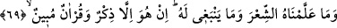
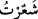
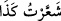
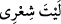
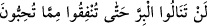

Bazen gönlümde ümitler belirir,
“Allah ak saçlarımdan utanır” der.
Fakat ben kendi günahlarımdan utanç duymazken
O benden utanırsa hayret ederim
69. Biz ona (Peygamber’e) şiir öğretmedik. Zaten ona yaraşmazdı da. Onun
söyledikleri, ancak Allah’tan gelmiş bir öğüt ve apaçık bir Kur’an’dır.
“Biz ona (Peygamber’e) şiir öğretmedik.” Bu âyet kâfir ve müşriklerin Hz.
Peygamber (s.a.) hakkında “O şâirdir, söylediği de şiirdir.” demelerini red ve iptal
etmektedir. Reddetme konusunda âşikâr olan “O şâir değildir, size okuduğu da şiir
değildir” denilmesi idi. Ancak O’nun şâir olmaması muallimi olan Allah Teâlâ’nın O’na
şiir öğretmemesini gerektirmediğinden, lâzım (gerekli/zorunlu olan Allah’ın O’na şiir
öğretmesi) reddedilmiş ve kinâye yoluyla melzûmun (onun gereği ve tabiî neticesi olan
şair olmasının) reddi murâd edilmiştir. Bu, onun tasrih edilmesinden/açıkça ifâde
edilmesinden daha beliğ ve etkilidir.
Râğıb der ki: “ denilir ki şiire isâbet ettim, demektir. “ sözü de
istiâredir. Şiire isâbet etmek gibi ince bir bilgiyle bildim demektir. Akıllı oluşu ve
ma’rifetinin inceliği sebebiyle şâire ‘şâir’ denilmiştir. Şiir aslında Arapların “
sözündeki dakik ve ince bilginin adıdır. Örfî olarak vezinli ve kafiyeli söze şiir denir.
Şâir ise şiir sanatı ile ilgili olan kimsedir.”
el-Kâmûs’ta ise şöyle der: “Her ilim şiir olsa da çoğunlukla vezin ve kafiye ile
şereflenen manzûm söze şiir denir.”
Kadim hukema nezdinde şiir vezinli ve kafiyeli değildir. Onlara göre vezin ve kafiye
şiirin ruknü değildir. Bilakis şiirin ruknü yalnız hayali mukaddimeleri ortaya koymaktır.
Sonra vezin ve kafiye göz önünde canlandırmaya yardımcı olurlar. Şâyet şiirle ilgili
kıyasta getirilen mukaddime yalnız hayâlî bir mukaddime ise bu kıyas yalnız şiirle ilgili
bir kıyastır. Şâyet buna ikna ile ilgili bir söz katılmışsa bu durumda mukaddime hem şiir
hem de ikna ile ilgili iki mânâdan oluşur. Eğer mukaddimeye eklenen yakînî bir söz ise
mukaddime hem şiir hem de burhandan meydana gelir.
Bazıları der ki: Şiir ya mantıkîdir ya ıstılâhîdir. Mantıkî olan yalancı/sahte
mukaddimelerden meydana getirilendir. Istılâhî olan ise kasıtlı olarak söylenmiş
kafiyeli ve vezinli sözdür. Kasden söylenmiş olma kaydı, şiirin on altı bahrinden birine
göre tesadüfen vezinli gelen âyetler gibi vezni denk gelen sözleri dışarda tutar.
Şu âyetler buna örnek verilebilir: “ / Sevdiğiniz şeylerden
(Allah yolunda) harcamadıkça “iyi”ye eremezsiniz…” (Âl-i İmrân, 3/92). “